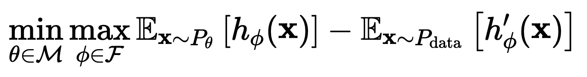
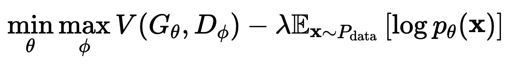

Flow-GAN: Combining Maximum Likelihood and Adversarial Learning in Generative Models
Aditya Grover, Manik Dhar, Stefano Ermon
Paper, Code
一、摘要
最近，概率模型的对抗性学习作为最大似然的一种有前途的替代方法出现了。隐式模型，
如生成对抗网络(GAN)，通常比最大似然训练的显式模型产生更好的样本。然而，
Gan回避了显式密度的表征，这使得定量评估具有挑战性。为了弥补这一差距，作者提出
了Flow-Gan，这是一种生成式对抗网络，可以对其进行精确的似然评估，从而支
持对抗和最大似然训练。当进行对抗性训练时，Flow-Gan生成高质量的样本，但获
得极低的对数似然分数，甚至不如记忆训练数据的混合模型;当用最大似然法训练时，
情况正好相反。在MNIST和CIFAR-10上的结果表明，混合训练可以在保持生成样本的视觉
保真度的同时获得较高的持留概率。
二、基本架构
这个的架构其实非常简单，就是将GAN里的Generative Model替换成 Normalizing Flow。
然后将 GAN 的训练目标从

替换成一个混合训练目标：

这里的前项 V 就是原始的 GAN 的训练目标，后一项是为了最大化 log 似然。
三、实验结果
实验在MNIST和CIFAR-10数据集上进行，使用了NICE和Real-NVP作为Flow-GAN的架构，并采用了Wasserstein距离作为对抗性训练的优化目标。
结合了对抗性训练和MLE，可以在保持视觉保真度的同时提高样本质量和对数似然得分。在MNIST数据集上，混合目标在样本质量和保留似然度方面都优于单独使用MLE或对抗性训练。
四、结论
文章提出了Flow-GAN，这是一种新型的生成对抗网络，它通过结合最大似然估计和对抗性学习来生成高质量且与文本描述高度一致的全身动作。实验结果表明，与传统的对抗训练相比，Flow-GAN在样本质量与对数似然得分之间取得了更好的平衡，尤其是在使用混合训练目标时。此外，文章还批评了现有的对数似然评估方法，并通过对生成器函数的Jacobian矩阵分析来解释不同训练方法对模型性能的影响。作者认为，Flow-GAN在需要精确密度估计的应用中具有广泛的应用前景。